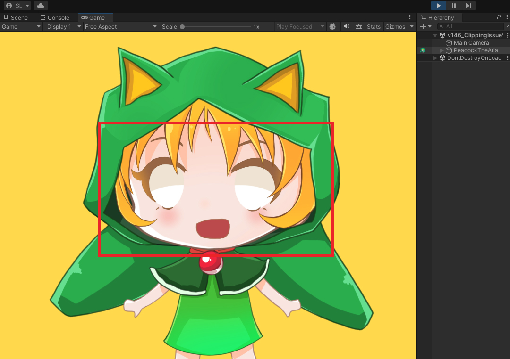
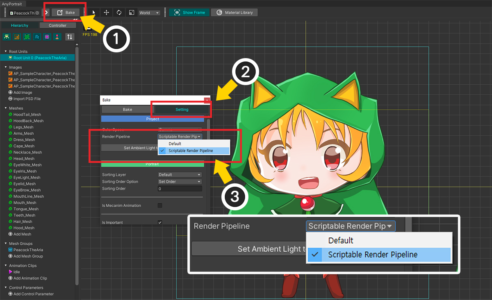
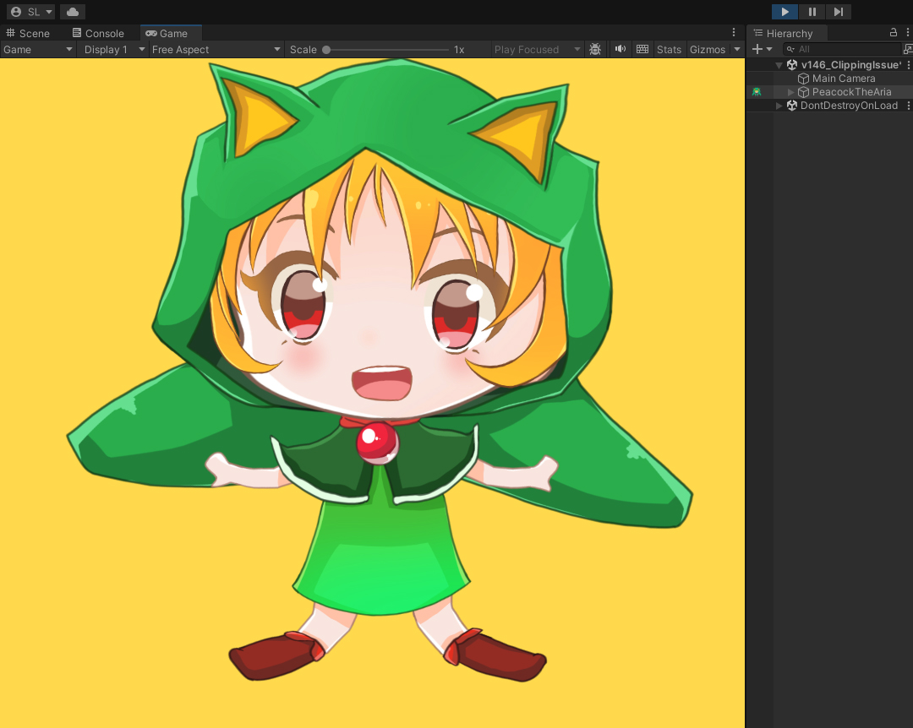
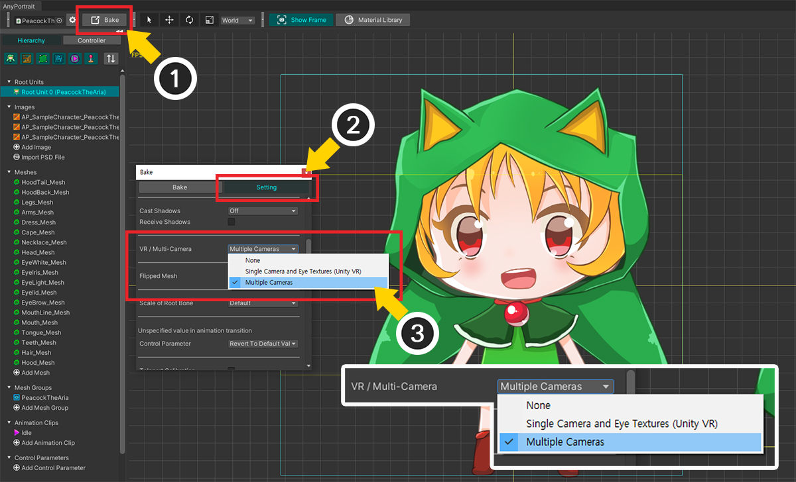
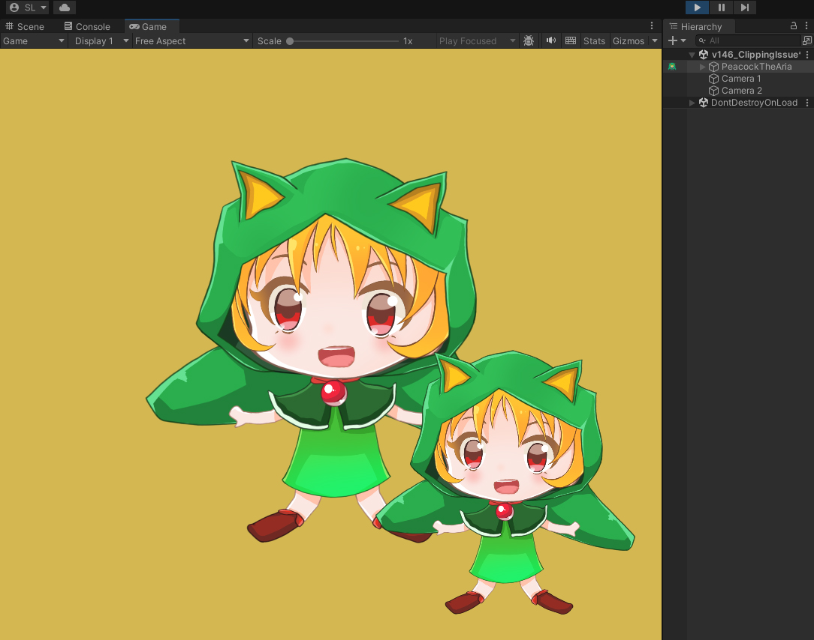

AnyPortrait > マニュアル > クリッピングメッシュのレンダリングの問題
クリッピングメッシュのレンダリングの問題
1.4.6
私たちのチームが多くのユーザーから受け取った質問の1つは、「クリッピングメッシュが正常にレンダリングされないこと」です。
レンダリングの問題は、見かけ上同じ問題であっても、異なる原因によるものである可能性があるため、解決するのは簡単ではありません。
クリッピングメッシュに関する問題の場合も、異なる原因が同じ問題を引き起こす可能性があります。
このページでは、ユーザーからのフィードバックに基づいて、代表的な原因とその解決策を紹介します。

このページで使用されるキャラクターです。
目と口のメッシュがクリッピングメッシュに設定されています。
レンダーパイプライン設定が正しくない場合
これは、主に「URP」を使用した場合、または「Built-In」レンダリングパイプラインに復元した場合に発生する可能性があります。

Unityエディタで「Project Settings > Graphics > Scriptable Render Pipeline Settings」で「URP」を適用しました。
続いて、「URP」に設定した後、「材質ライブラリ」を用いて「URP用材質」をキャラクターに適用します。 （関連ページ）

「Bake」をしてゲームを実行しましたが、クリッピングメッシュはレンダリングされません。

この場合、「レンダリングパイプライン」設定が現在のプロジェクト設定と一致しないために発生した可能性があります。
(1) AnyPortraitエディタの「Bake」ボタンを押します。
(2) 「Setting」タブを選択します。
(3) 「Render Pipeline」の設定が現在のプロジェクトの設定に合っていることを確認してください。
「URP」の場合は「Scriptable Render Pipeline」に設定し、「デフォルトレンダリングパイプライン」を使用する場合は「Default」に設定する必要があります。

「Bake」をしてゲームを実行すると、クリッピングメッシュが正常にレンダリングされることがわかります。
2台以上のカメラがある場合

(1) キャラクターをレンダリングする 2 つのカメラをシーンに配置しました。
2つのカメラによって1つのキャラクターが2回レンダリングされるのが見られます。

この状態でゲームを実行すると、1つのカメラを除く残りのカメラではクリッピングメッシュが正常にレンダリングされません。
AnyPortraitのクリッピングメッシュは、小さな解像度の「レンダリングテクスチャ」を使用して最適化されたマスクを作成するためにカメラのプロパティを参照します。
ところで、2つ以上のカメラがキャラクターをレンダリングしたい場合、クリッピングマスクの最適化機能が誤動作を引き起こすことです。
この問題を解決するには、予想外のオプションである「VR」サポート機能を使用する必要があります。
「VR」は基本的に2つのカメラが動作するシステムですが、この場合と同じなので適切な解決策になります。
（「VR」については、関連ページで詳細をご覧いただけます。)

(1) 「Bakeダイアログ」を開きます。
(2) 「Setting」タブを選択します。
(3) 「VR / Multi-Camera」オプションの値を「Multiple Cameras」に変更します。
「Bake」を実行すると問題が解決します。
ただし、この状態では残念ながら、クリッピングメッシュの最適化機能は無効になります。
そのため、低解像度のクリッピングマスクによってレンダリングクオリティが低くなるという問題が発生する可能性があります。

(1) 「メッシュグループ」を選択します。
(2) クリッピングマスクとなるメッシュを選択します。
(3) 「Mask Texture Size」属性の値を変更してクリッピングマスクの解像度を上げます。
表示されるメッシュのサイズと品質によって決定する必要があります。

「Bake」をしてゲームを実行すると、クリッピングメッシュが正しく動作することがわかります。
多数のカメラを配置した状態で、そのカメラが「レンダーテクスチャ」を対象にレンダリングを行う場合には、副次的な課題がさらにあります。
この場合は、関連ページで詳細を確認してください。
スクリプトの実行順序が適切でない場合
AnyPortraitのクリッピングマスクは、更新ルーチンの過程でどのように描画されるかを計算します。
その計算は、カメラとキャラクターの位置、属性などを参照します。
更新でマスク関連の計算を行うときと実際にレンダリングされたときの関連要素の状態が一致しない場合、クリッピングマスクとメッシュが正常にレンダリングされない可能性があります。
多くのユーザーが「Cinemachine」、「UniTask」、「Naninovel」などを使用しているこの問題を経験しています。
この問題を扱うマニュアルが別途あるので、それを参照すればよいでしょう。
- 他のアセットとの実行順序の問題